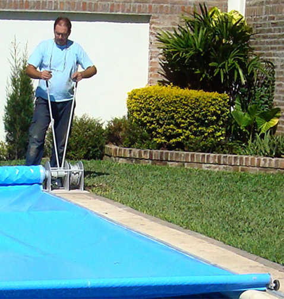

Sistemas Doble Accionamiento

Modelo de accionamiento Manual Doble Comando: Se abre y cierra fácilmente mediante dos palancas tipo crique que se accionan hacia adelante y hacia atrás, lo que le permitirá acceder a su piscina en pocos minutos. Está pensado para piscinas de tamaño medio y es ideal para aquellas que no cuentan con instalación eléctrica cerca de la misma. Este proceso se lleva a cabo rapidamente, sin necesidad se atar cuerdas o colocar ganchos o bolsas de arena para fijar la lona. La operacion del sistema se realiza mediante dos palancas que el usuario acciona con las manos y que permite que sea operado comodamente por una sola persona. Este sistema es ideal tambien para personas con movilidad reducida